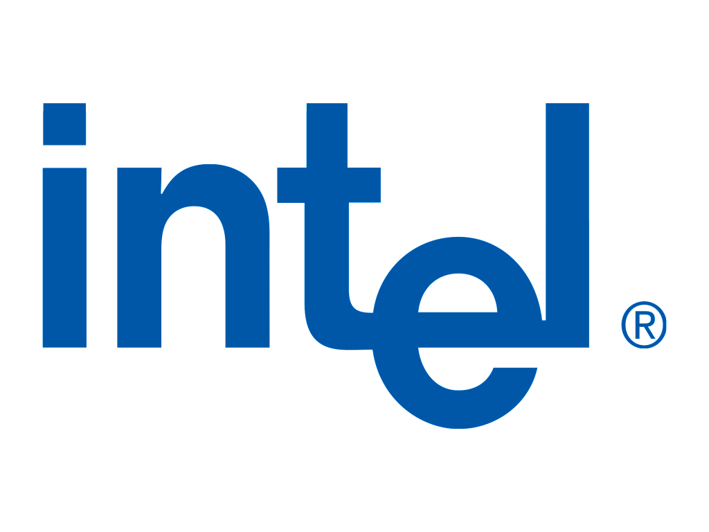
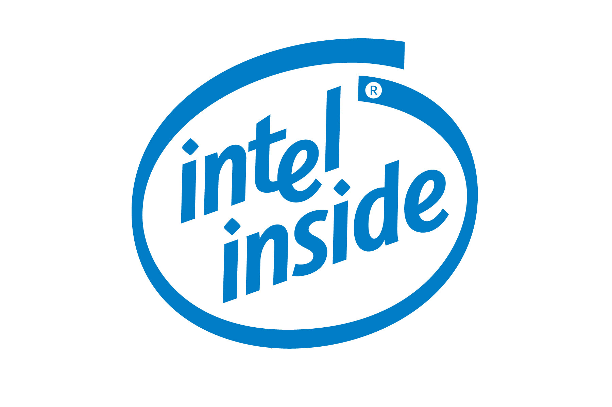
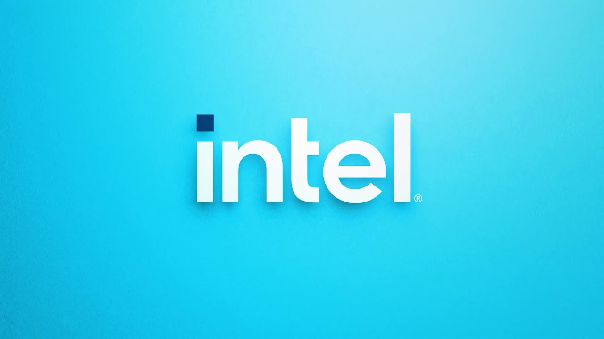

История Intel
Появление микропроцессора изменило технологическую отрасль: благодаря этому стало возможно производить персональные компьютеры и мобильные устройства. К началу 21 века более 80% ПК во всем мире работали на микропроцессорах Intel. Корпорация создавала технологии, без которых мы уже не сможем обойтись. Вспомним, с чего началась ее история.
Корпорация Intel — крупнейший в мире производитель полупроводников, производственные мощности которого находятся в США, Европе и Азии. Компания была основана в 1968 году, когда ее создатели почувствовали, что недостаточно внимания уделяют инновациям. Сейчас корпорация выпускает самую разнообразную технику: материнские платы, флэш-память, коммутаторы, маршрутизаторы, микросхемы и многое другое.
История логотипа Intel
Первый логотип
Intel имела только два корпоративных логотипа с момента своего основания в июле 1968 года. Теперь их три. Самый первый логотип придумали сами создатели компании: Роберт Нойс и Гордон Мур. Его назвали "dropped e" логотипом, потому что буква "e" была смещена относительно других. Этот логотип использовался более трех десятилетий и выглядел вот так:
Второй логотип
На международной выставке CES в 2006 году Intel объявила о новой стратегии развития компании и представила новый корпоративный логотип, который использовался до 2020 года. Дизайн сильно изменился: появилось округление вокруг названия компании, а написано все стало оригинальным шрифтом Neo Sans Intel.
Музыкальный логотип
В дополнение к своему синему корпоративному логотипу Intel также имеет звуковой логотип, известный как "Intel bongs". Эти четыре ноты придумал исполнитель Уолтер Верзова в 1994 году. По словам Верзова, ритмический рисунок четырех нот был создан по образцу слогов в слогане компании In-tel-In-side. Кстати сам логотип слогана раньше выглядел вот так:
Третий логотип
Вот мы и дошли до новой версии логотипа компании. На сайте Intel указывается, что логотип создан с изысканной симметрией, равновесием и пропорциями, а также он сохраняет наследие старых версий, что делает его одновременно и знакомым, и новым. Отдельно отмечается, что выделяющаяся точка над буквой «i» символизирует потенциал и мощь процессоров компании. Также компания сохранила фирменный музыкальный логотип, который обычно можно услышать в рекламе Intel. Однако уточняется, что звучать он теперь будет в более «современном исполнении».
История развития компании Intel
Со временем Нойс и Мур сочли, что Fairchild Semiconductor уделяет разработкам недостаточно внимания. Они решили основать собственную компанию и обратились за помощью к венчурному капиталисту Артуру Року. В тот момент их бизнес-план занимал лишь одну страницу. Рок доверял Нойсу и Муру и предоставил $3 млн в качестве стартового капитала. 18 июля 1968 года основатели зарегистрировали компанию под названием N M Electronics, но вскоре изменили название на Intel (от англ. integrated electronics, «интегрированная электроника»). Перед тем как в 1971 году стать публичной компанией, Intel привлекла еще $2 млн инвестиций. Нойс и Мур сформировали особую культуру управления, которая со временем распространилась в Кремниевой долине. Они отрицали иерархию и поддерживали творчество. Третьим по значимости в Intel стал Эндрю Гроув, который смог эффективно организовать работу и поддерживать дисциплину. Фактически благодаря ему работал закон Мура: число транзисторов, размещаемых на интегральной схеме, удваивалось регулярно — каждые 18 или 24 месяца.
AMD и Intel: партнерство и конкуренция
Для IBM было слишком рискованно иметь единственного поставщика чипов. Поэтому в 1976 году Intel и Advanced Micro Devices (AMD) заключили соглашение о перекрестном лицензировании, а в 1982 году приняли решение об обмене технологиями. Однако уже в 1980-х Intel отказалась раскрывать сведения о новом процессоре 80386. В 1991 году AMD подала антимонопольный иск на $2 млрд против Intel, заявив, что компания незаконно обеспечивала статус монополиста на рынке. В 1995 году компании сообщили, что достигли соглашения. AMD получила бессрочную лицензию на микрокод процессоров 80386 и 80486. Позже Intel неоднократно получала претензии от Федеральной торговой комиссии США, Еврокомиссии, регуляторов Японии и Южной Кореи. В 2006 году AMD подала жалобу на Intel в Федеральное управление картелей Германии, утверждая, что сделка между Intel и Media Markt препятствовала продажам компьютеров на базе процессоров AMD.
В 2007 году Европейская комиссия обвинила Intel в нарушении антимонопольного законодательства. Ведомство постановило, что компания предлагала скидки производителям ПК, которые покупали большинство процессоров у Intel, платила за задержку или отмену продуктов на базе процессоров AMD и продавала свои процессоры ниже себестоимости на торгах, в которых участвовала вместе с AMD. В 2009 году Intel и AMD урегулировали все антимонопольные и патентные споры. Intel согласилась выплатить AMD $1,25 млрд, согласившись при этом на ряд положений о деловой практике и пятилетнее соглашение о перекрестном лицензировании. Стоит отметить, что победы в судебных разбирательствах не дали AMD серьезного преимущества: Intel активно разрабатывала новинки, и на момент передачи патентов технологии уже не являлись передовыми. В 1999 году AMD представила высокопроизводительный процессор Athlon, который должен был конкурировать с Pentium. В качестве ответа была запущена серия Core.
Intel в России
Россия — один из ключевых рынков для компании. В 1991 году был открыт филиал в Москве, в 2000 году — центр RandD в Нижнем Новгороде. С 2004 года по 2016 год работал центр разработки в Новосибирске. Летом 2015 года запущена лаборатория по разработке решений для «интернета вещей» в Москве. В России компанию возглавляет Наталья Галян. Директором нижегородского центра исследований и разработок является Иван Кузьмин. Центр RandD Intel в Нижнем Новгороде — один из крупнейших исследовательских центров компании в Европе и за пределами США. Основные направления его исследований — ИИ, беспилотное вождение, Big Data и совместное программно-аппаратное проектирование. Ключевые направления деятельности нижегородского центра Intel:
- оптимизация кросс-платформенного ПО и анализ производительности;
- создание алгоритмов и инструментов для разработчиков в области компьютерного зрения и искусственного интеллекта;
- оптимизация обработки мультимедиа;
- высокопроизводительные вычисления;
- архитектура коммуникационных систем, алгоритмы обработки сигналов и комплексное моделирование беспроводных коммуникаций;
- оптимизация микроархитектур и прогрессивные разработки для будущих процессорных архитектур;
- физическое и математическое моделирование схем;
- продуктизация ПО и инструментов для разработчиков (создание продуктовой документации, лицензирование и др).
В России Intel поддерживает программы сотрудничества с университетами и студентами, в том числе с целью последующего найма, организует кратко- и долгосрочные обучающие курсы для студентов, хакатоны, семинары и оплачиваемые стажировки для студентов. Два раза в год на базе нижегородского Центра исследований и разработок Intel проходят курсы «Дельта» для студентов, выпускников и начинающих разработчиков, которые направлены на восполнение «дельты» между вузовской программой и требованиями рынка (с этим связано и название программы). В Москве Intel является одной из базовых организаций кафедры «Микропроцессорные технологии в интеллектуальных системах управления» в МФТИ. В новом учебном году Intel запускает программу «Технологии искусственного интеллекта для каждого» в 7 образовательных учреждениях России, расположенных в Москве, Пскове, Самаре, Кемеровской, Рязанской и Томской областях.